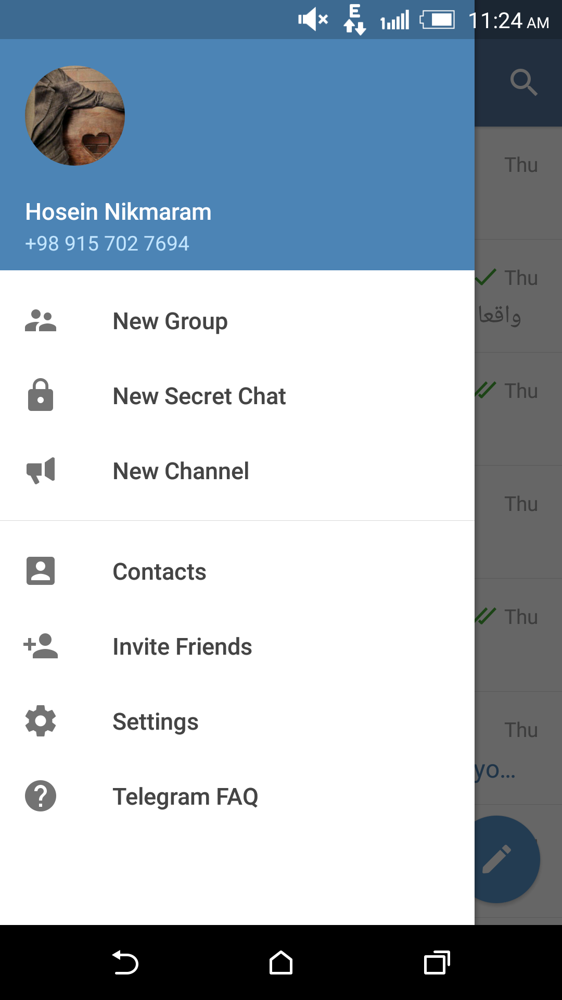
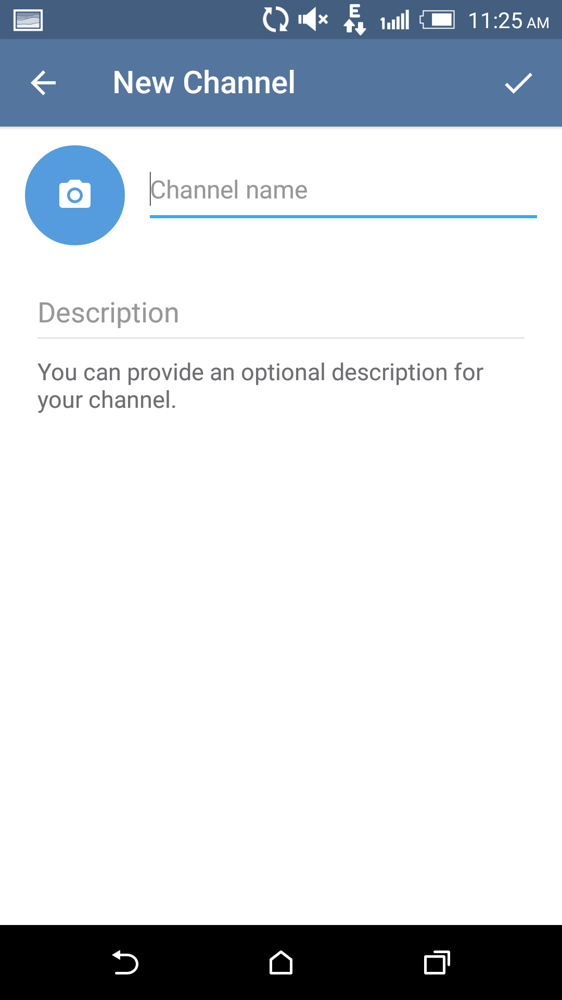
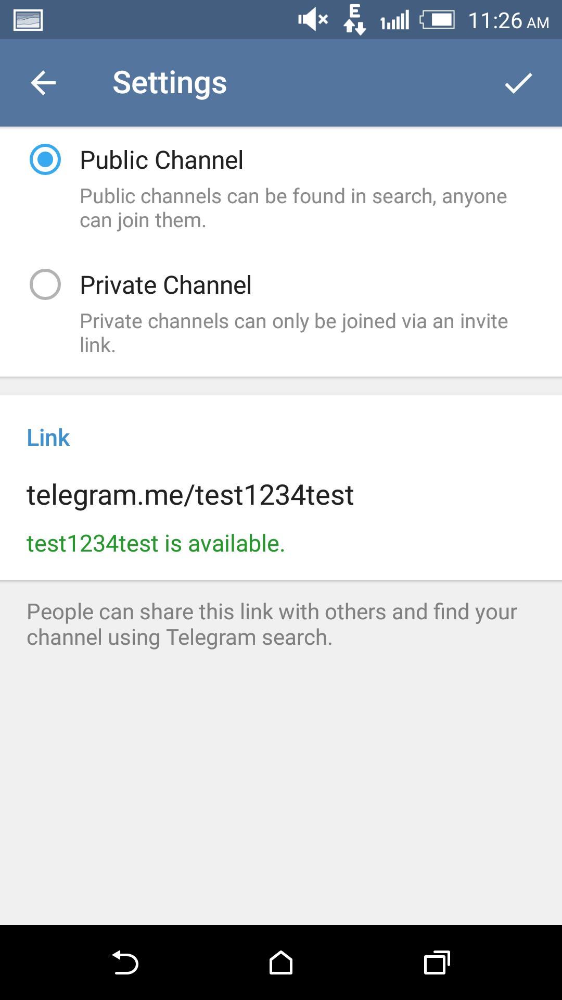
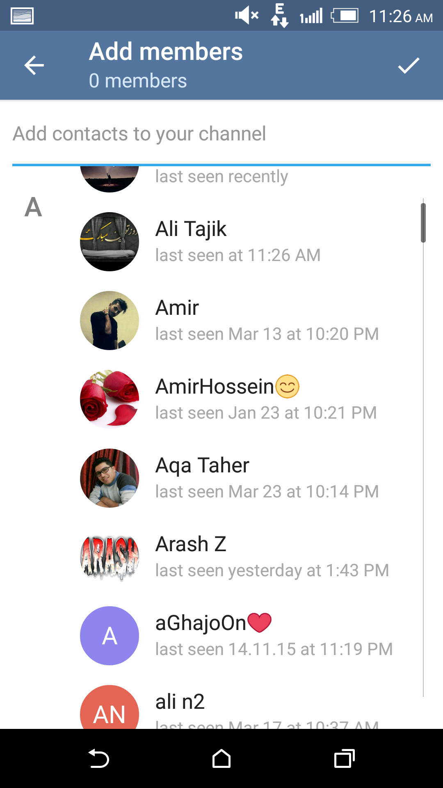
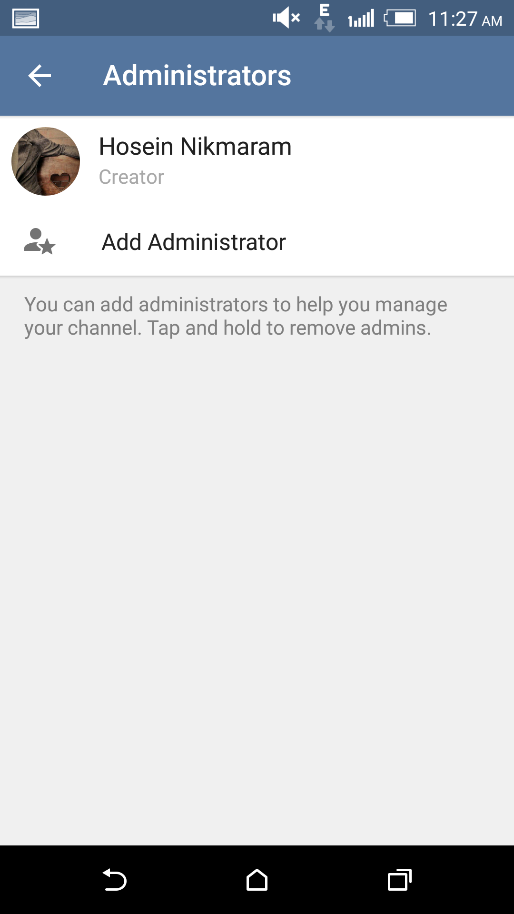

در جدیدترین ورژن عرضه شده تلگرام (نسخه 3.2.0) میتوانید با ایجاد کانالهای اختصاصی و عمومی، از محدودیتهای پیشین در زمینه ایجاد گروه، یعنی تعداد کم اعضا و عدم ایجاد چند ادمین برای گروه نجات پیدا کنید.
برای ایجاد ساخت یک کانال مسیر سختی پیش روی ندارید؛ با ما باشید تا این مسیر را کمی مرور کنیم.
اگر تلگرام خود را آپدیت کرده باشید گزینه New Chanel را مشاهده میکنید

با لمس این قسمت وارد صفحه بعد میشوید
در اینجا میتوانید اسم کانال خود را انتخاب نموده و در قسمت زیرین توضیحات مربوط به آن را اضافه کنید

سپس با لمس آیکون تایید، وارد صفحه بعد میشود.
نوع کانال مورد نظر خود را انتخاب نمایید

قسمت اول مربوط به کانالهای عمومی بوده و همه کاربران میتوانند با وارد کردن نام کانال شما آن را پیدا کرده و عضو شوند.
قسمت دوم کانالهای خصوصی است و تنها کسانی که شما دعوت کنید قادر به مشاهده مطالب هستند!
نکته قابل ذکر در خصوص کانال عمومی این است که باید برای آدرس کانال، نامی انتخاب کنید که پیش از شما انتخاب نشده باشد!
برای ثبت کانال Public یا عمومی در صورت موجود بودن اسم آدرس پیشنهادی شما، با پیغام …. is available مشاهده خواهید شد و بدین ترتیب پس از لمس گزینه تایید وارد صفحه بعد خواهید شد. از این به بعد لینک گروه شما این چنین خواهد بود:
Telegram.me/your channel name
در قسمت بعد شما میتوانید افراد مورد نظر خود را بدون هیچ گونه محدودیتی به عنوان اعضای اولیه به کانال ایجاد شده اضافه نمایید.

برای ثبت کانال خصوصی، محدودیت انتخاب نام موجود را نداشته و خود تلگرام برای شما این عمل را انجام میدهد. همانطور که گفته شد کانال خصوصی قابل جستجو نبوده و تنها شما میتوانید اعضای مورد نظر را به دلخواه به گروه اضافه کنید.
لازم به ذکر است که ایجاد کانال با نامهای مختلف توسط یک کاربر امکان پذیر است، البته تلگرام این موضوع را محدود کرده و شما میتوانید تنها 5 کانال عمومی در این نرمافزار بسازید.
در قسمت تنظیمات گروه خود، میتوانید به راحتی با ورود به منوی Administrators برای کانال خود، مدیران دیگری را انتخاب کنید تا در مواقع ضروری بتوانند به شما کمک کنند.
